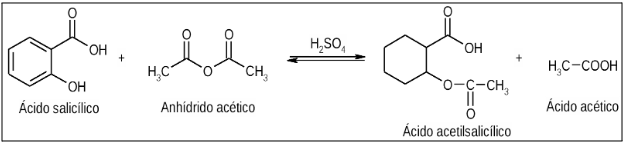
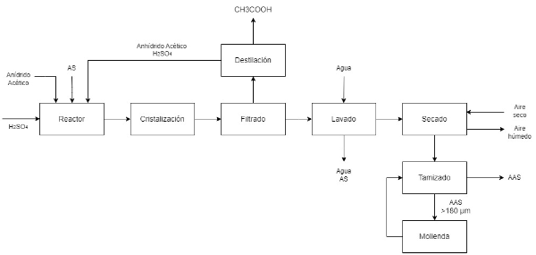
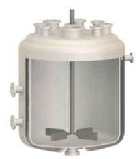
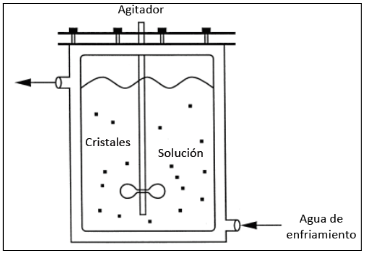
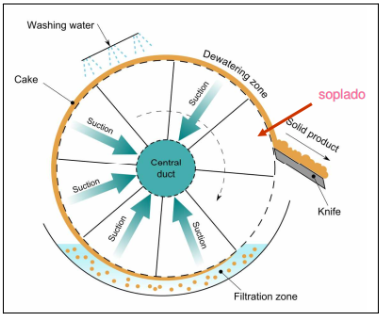
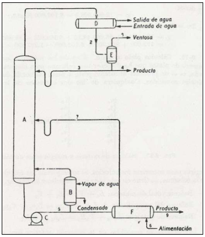
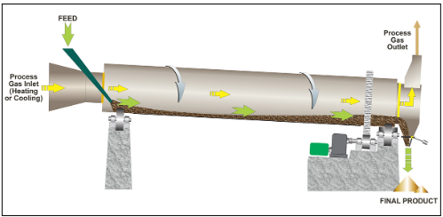
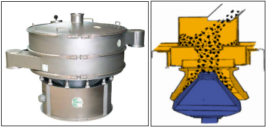

Ácido acetilsalicílico
¿Qué es el ácido acetilsalicílico?
El ácido acetilsalicílico, o más conocido por su nombre comercial Aspirina, es
una sustancia de la familia de los salicilatos, usado habitualmente en la medicina como antiinflamatorio,
analgésico, antipirético y anticoagulante.
Se sintetiza mediante la esterificación, en medio ácido sulfúrico, del ácido salicílico con anhídrido acético , obteniendo ácido acético como subproducto de reacción.
A continuación, se observa el mecanismo de reacción para la producción de aspirina.
Se sintetiza mediante la esterificación, en medio ácido sulfúrico, del ácido salicílico con anhídrido acético , obteniendo ácido acético como subproducto de reacción.
A continuación, se observa el mecanismo de reacción para la producción de aspirina.
Produción industrial
El proceso productivo de formulación de aspirina se visualiza en la siguiente imagen:

El mismo consiste en 8 etapas:
Reacción
Se cargan los reactivos a un tanque agitado que verifica la reacción de acetilación a 90°C
y presión atmosférica durante dos horas. Logra una conversión de ácido salicílico del 93%.

Cristalización
El contenido del reactor se vuelca en un cristalizador enfriado a 30°C que permite la formación
y crecimiento de cristales de AAS.

Lavado
Los cristales formados caen a un filtro de tambor rotatorio que permite lavar y separar la
mezcla en tres corrientes: una corriente húmeda de aspirina, el líquido de lavado con salicílico
sin reaccionar y una corriente con anhídrido acético, catalizador y subproducto.

Destilación
La corriente de anhídrido, sulfúrico y acético se lleva a una torre de destilación que permitirá
separar dichos compuestos basándose en sus temperaturas de ebullición. El ácido acético hierve a
118°C y se obtendrá como subproducto por cima, mientras que el anhídrido y el sulfúrico caen al
fondo por su menor volatilidad. Esta corriente es recirculada al reactor.

Secado
La aspirina humedecida se transporta hacia un secadero rotatorio que permite remover la humedad
utilizando aire a 85°C. Se tolera un porcentaje de humedad de hasta 0,05%

Tamizado y molienda
Con el objetivo de obtener la granulometría adecuada según Farmacopea, de 180 µm, se lleva el sólido
seco a un tamiz que separa las fracciones mayores y menores a este valor. Aquellos cristales que
poseen un tamaño de partícula mayor al especificado se dirigen a un molino cónico para cumplir con
los requisitos establecidos.

Almacenamiento
Los cristales son finalmente empaquetados en bolsones y almacenados a condiciones atmosféricas,
listos para ser entregados al cliente. Se ha obtenido un producto con una pureza del 99,5%.